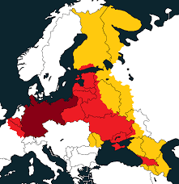
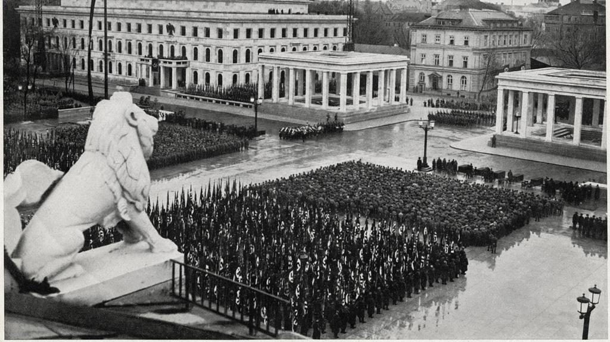
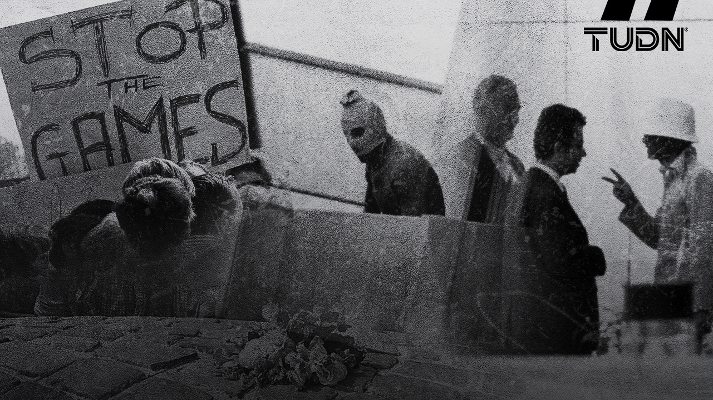

La ciudad de Múnich fue fundada por Enrique el León, duque de Baviera y Sajonia.
Después de un incendio, la ciudad fue reconstruida por el emperador del Sacro Imperio Romano Germánico. Durante la Guerra de los Treinta Años, el rey de Suecia tomó la ciudad.
A comienzos del siglo xix la ciudad, al igual que el resto de Baviera, pasa a formar parte de la Confederación del Rin fomentada por Napoleón I. Tras el derrumbamiento del Imperio Napoleónico, Baviera se unió a la Confederación Germánica.
Durante los reinados de Maximiliano I, Luis I, Maximiliano II, Luis II y la regencia del príncipe Leopoldo, la arquitectura y las artes en la ciudad florecieron como nunca.Después de la victoria alemana en la Guerra Franco-Prusiana, liderada por Otto von Bismarck, Baviera y con ella Múnich pasaron a integrar el Imperio alemán.
Al terminar la Primera Guerra Mundial, Múnich se convirtió en el foco de los principales movimientos que rechazaban las condiciones de paz que el Tratado de Versalles impuesto a Alemania. En este contexto se llevó a cabo en 1923 el «Putsch de Múnich», levantamiento dirigido por Adolf Hitler.
En 1938, los representantes de Francia, Reino Unido y Alemania firmaron los Acuerdos de Múnich, por los que se cedían los Sudetes a Alemania.
En el transcurso de la Segunda Guerra Mundial, Múnich fue gravemente dañada. Sin embargo, en las décadas posteriores al conflicto se ha reconstruido cuidadosamente. Finalizada la guerra, Baviera se integró en la República Federal de Alemania.
En esta ciudad se realizó en 1962 una reunión de españoles críticos con el régimen franquista, denominada despectivamente Contubernio de Múnich.
La denominada masacre de Múnich en 1972, tuvo lugar durante la XX edición de los Juegos Olímpicos de verano. Ese día un comando de terroristas palestinos denominado Septiembre Negro tomó como rehenes a once integrantes del equipo olímpico de Israel. La tragedia fue vista en todo el mundo a través de la televisión.

Para más información: Historia.